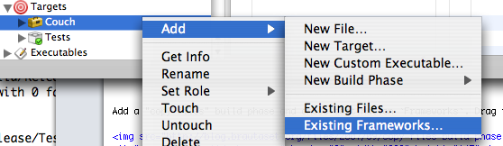

Embedding Cocoa Frameworks
I show how to embed a cocoa framework into your application.
Cocoa has a really neat feature that allows you to embed a framework inside your application bundle. Why would you want to do this? Not all frameworks are available everywhere. Instead of forcing your users to install lots of frameworks before they can start using your app, simply bundle them inside your app.
You cannot simply embed any framework; it has to be built specifically
for embedding. A framework is a dynamically linked library. These have
the path they are installed at hardcoded inside them. (For security
reasons, or some such; it's damn inconvenient at any rate.) Normally
these paths are of the form /Library/Frameworks/. For an embedded
framework, however, we have to use something else. The special path
@executable_path refers to the path of the executable inside your
application bundle. You can then refer to the Frameworks directory in
your application bundle by setting the installation path of your
framework to be @executable_path/../Frameworks.

If you want to embed a framework inside another framework you'll need
the even more special @loader_path, which is only available in OS X
10.4 Tiger and later. I find this useful, so that's what I used in the
example above. Now add the framework to your application the way you'd
add any other existing framework:

Add a "copy files" build phase and chose destination Frameworks. Drag
the embedded framework you added into it.

Voilá!
Jonathan "Wolf" Rentzsch has a screencast that shows you in more detail how to embed frameworks. It is for a rather older version of Xcode than what is available now, but it is still good. The Cocoa developer guide to embedding a framework is also good.